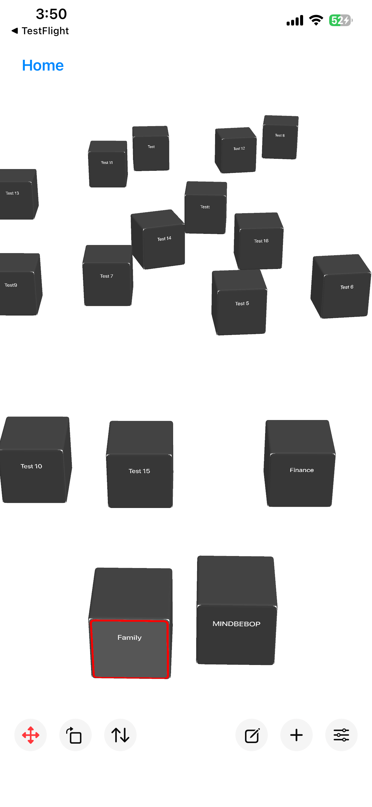
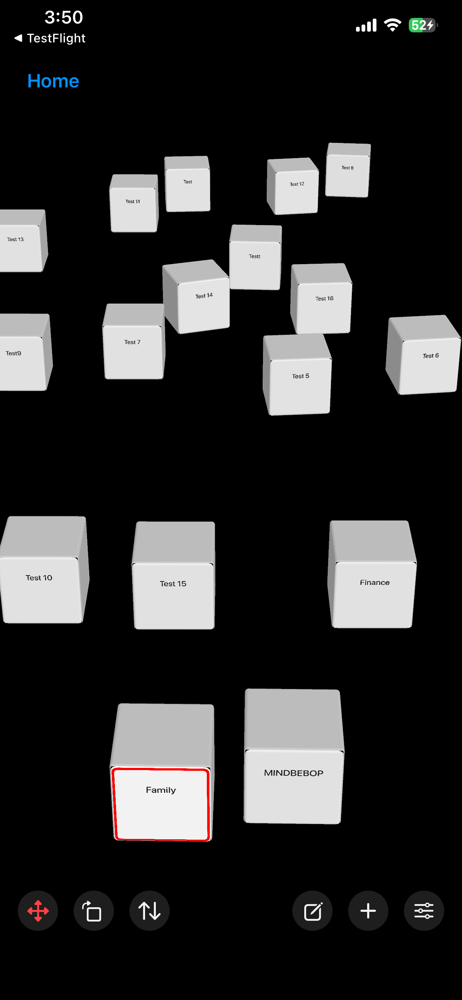

A space where thoughts can have places, possible paths can remain available, and you decide when — or whether — to go anywhere from them.
Thoughts can drift through the Mental Background while you are doing something else.
Some pass through.
Some keep returning.
Sometimes changing your relationship with a thought is enough.
You may look at it differently.
Put it aside.
Give it less attention.
Create a boundary.
Or give your attention somewhere else to move.
The thought may settle.
But sometimes it remains.
Thought Space gives a thought somewhere to exist without requiring you to solve it, organize it, or turn it into a task.
And if you eventually discover that there is somewhere you want to go from that thought, a path can begin from there.
A thought can have a place
before it has a destination.


Much of MINDBEBOP begins with thoughts that can be expressed in words.
A sentence.
A worry.
A reminder.
An idea.
Something you keep telling yourself.
Something that appears while your attention is supposed to be somewhere else.
These verbal thoughts can drift through what MINDBEBOP calls the Mental Background.
MINDBEBOP does not assume that every thought in the Mental Background is important.
It also does not assume that every recurring thought is meaningless noise.
Different thoughts may need different relationships.
Some thoughts may behave like Thought Noise.
They may repeat.
Interrupt.
Feel louder than their importance seems to justify.
Or simply remain difficult to leave unattended.
Different MINDBEBOP tools provide different ways of changing your relationship with those thoughts.
MindFlipOut
Look at a recurring thought differently.
MindShoutOut
Put aside a thought you do not need to carry right now.
MindZoneOut
Give an overloaded mind a quiet moment.
MindBackOut
Create some distance from selected apps.
MindBackyard
Give attention room to move.
Sometimes that change in relationship may be enough.
The thought settles.
Nothing else needs to happen.
But sometimes a thought remains.
And that raises a question MINDBEBOP is beginning to explore:
If changing our relationship with a thought is not enough,
might there sometimes still be somewhere we want to go from it?
That is a hypothesis.
MINDBEBOP does not assume that every persistent thought contains a hidden goal or destination.
Thought Space gives us somewhere to find out.
Mental Shelving is the practice of consciously setting something aside mentally so it does not need to remain in your immediate attention.
The thought is not necessarily solved.
It is not necessarily forgotten.
You are allowing yourself to leave it for now while keeping it available to return to later.
Thought Space makes that act spatial.
Thought
↓
Thought Block
↓
Give it a place in Thought Space
↓
Leave it there
↓
Return when you want
We call this Spatial Mental Shelving.
The "shelving" is not a physical or graphical shelf.
It is the mental act of setting something aside.
Thought Space gives that act a visible, persistent place in space.
A Thought Block can simply exist somewhere in that space.
No shelf-shaped object is required.
No category is required.
No priority is required.
No due date is required.
No action is required.
Give the thought a place.
Set it aside
without losing it.
Most digital systems turn a thought into information.
Thought
↓
Text
↓
List item
Thought Space explores another representation.
Thought
↓
Thought Block
↓
Place
A Thought Block gives a thought a persistent visual presence in space.
You can move it.
Move around it.
Rotate it.
Change its size.
Move closer.
Move farther away.
Leave it somewhere.
Come back later.
Or leave it alone.
Seeing a thought does not mean you have to handle it.
There is a difference between:
I need to keep remembering this.
and:
I know where that is.
Spatial Mental Shelving explores whether giving a thought a persistent place can help create that second feeling.
The thought remains available.
But availability does not require keeping it continuously in the foreground.
Most software brings information toward your attention.
Look at this.
Remember this.
Respond to this.
Do this next.
Thought Space can reverse that relationship.
The Thought Block can stay where it is.
You decide whether to approach it.
The thought is not interrupting me.
I am choosing to approach the thought.
You may reach it and stay with it for a while.
You may move it.
You may discover something new about it.
Or you may turn around and leave it there.
The decision to approach belongs to you.
Most information systems quickly ask you to classify what you enter.
What category?
Which project?
What priority?
When is it due?
Thought Space can begin with a more basic question:
Where do I want this?
That may be enough.
Placement can come before organization.
Or organization may never be necessary at all.
A list usually expresses relationships through order, labels, and categories.
A space can express them through placement.
One thought can be nearby.
Another can be farther away.
Two thoughts can sit close together.
Something can remain directly in view.
Something else can stay somewhere you are less likely to encounter it.
Thought Space does not need to assign a universal meaning to any of those positions.
Closer does not have to mean more important.
Farther away does not have to mean less important.
Smaller does not have to mean less significant.
A particular rotation does not have to mean a particular kind of thought.
The arrangement can simply reflect how you want those thoughts to exist around you.
You do not always need to formally review what is on your mind.
Sometimes you may encounter thoughts while moving through Thought Space.
Oh, that is still there.
I see that differently now.
Those two things may be connected.
I still do not want to deal with that.
Maybe there is somewhere I want to go from this.
Then you can continue moving.
There is no requirement to process everything you encounter.
Thought Space can make checking your thoughts feel less like reviewing an inbox and more like encountering things in an environment.
Thought Space is not intended to contain every thought you have.
It is not a spatial reconstruction of your entire mind.
A thought may pass.
A different MINDBEBOP interaction may be enough.
Or you may decide that you want a thought to remain somewhere you can intentionally encounter it again.
That decision belongs to you.
MINDBEBOP does not automatically decide that a thought belongs in Thought Space.
Thought Space is somewhere you can choose to put it.
A Thought Block is not the same thing as a goal.
And it is not the same thing as a Mental Destination.
Consider a Thought Block called:
Family
Family is not a destination.
But different possible directions may emerge from it.
Family
↙ ↓ ↘
Spend more undistracted time together
Create more financial breathing room
Be more patient at home
These directions can coexist.
They may matter at different times.
They may operate on different timescales.
They may eventually lead to different Mental Destinations.
Or they may never become Mental Navigations at all.
A Thought Block therefore does not need one fixed vector.
A Thought Block can be an origin
from which multiple directions are possible.
Thought Space already provides a concrete way to keep possible paths with a thought.
A Thought Block can be connected to saved Mental Steps in MindEntry.
One Thought Block can have one connected set of Mental Steps.
Or several.
Thought Block
↓
Mental Steps
Mental Steps
Mental Steps
When Mental Steps are connected, a small link indicator appears directly on the Thought Block.
The number shows how many connected Mental Steps are available.
Tap the indicator to see the Mental Steps associated with that thought.
Choose one, and MindEntry opens it so you can begin those Mental Steps from there.
Encounter the thought
↓
See possible paths
↓
Choose one when you want
↓
Begin Mental Steps in MindEntry
The Thought Block remains the thought.
The connected Mental Steps remain possible paths.
Choosing whether to take one remains up to you.
Connecting Mental Steps to a Thought Block does not turn the thought into a task.
Mental Steps do not begin automatically.
One connected path does not have to become the primary path.
Several can remain available at the same time.
And none of them need to be followed.
This thought is here.
There are places I could go from it.
I do not have to go anywhere right now.
This distinction matters.
Thought Space should not become a system that looks at your life and announces:
7 goals.
23 steps.
3 things you should have done already.
That would turn possibility into pressure.
Thought Space explores the opposite possibility:
A path can remain available
without becoming a demand.
Sometimes you approach a Thought Block and realize that you do want something to change.
There is somewhere you want to go from here.
A possible direction can now become an intentional direction.
You may already have Mental Steps connected to the Thought Block.
If one of those paths fits, you can open it directly from the Thought Block and continue in MindEntry.
Or you may discover that none of the existing paths fits where you want to go now.
The important change is not that the Thought Block has become a task.
It is that you have chosen a direction.
Thought
↓
Possible directions
↓
Chosen direction
↓
Mental Destination
↓
Mental Navigation
MindEntry provides the Navigation layer.
You can move toward the Mental Destination through Mental Steps.
Take the next move.
See where you are afterward.
Change the route.
Change the Mental Destination.
Or continue from your new Current Position.
The distinction is important.
Mental Navigation involves intentional movement toward a Mental Destination.
Current Position
↓
Mental Steps
↓
Mental Destination
Thought Space does not require any of that.
You can enter without a Mental Destination.
You can move without trying to arrive anywhere.
You can look at a Thought Block without beginning a Navigation.
You can have Mental Steps connected to it without starting them.
You can see several possible directions and choose none.
Thought Space can hold possibility
before it becomes Navigation.
MindBackyard contains different spaces for different relationships with attention.
Infinite Hallway contains almost nothing you need to think about.
Move.
Wander.
Let attention loosen.
Thought Space allows things from your own mind to exist within the environment.
Move.
Notice.
Approach.
Reorient.
Pass by.
Neither space requires a destination.
Infinite Hallway can also become part of Mental Navigation.
A Mental Step can send you there for a while and then return you to the same active Mental Step when you are ready to continue.
Thought Space and Infinite Hallway therefore do not need to become the same environment.
They can play different roles within the larger MINDBEBOP system.
This may be one of the most important rules in Thought Space.
Seeing a Thought Block does not mean it needs action.
Moving a Thought Block does not mean you are organizing it.
Connecting Mental Steps does not mean they need to be started.
Seeing a possible direction does not mean it needs to become a Mental Destination.
A Thought Block should never become a red badge, unfinished item, or demand to clear the space.
It can simply exist.
This is here.
That can be enough.
Thought Space is not intended to become a visual task manager.
It does not need columns for To Do, Doing, and Done.
It does not need productivity scores.
It does not need streaks.
It does not need to reward you for filling the space.
It does not need to reward you for clearing it.
It does not need to turn every thought into work.
And it does not need to turn every possible Mental Navigation into an obligation.
Possibility is not pressure.
Thought Space should remain spacious.
The empty areas are not wasted screen space.
They are part of the experience.
A Thought Block should not always be directly in front of you.
Possible paths should not need to be exposed all the time.
The environment should not constantly compete for your attention.
Space around the thought
can matter as much as
the thought itself.
A spatial environment should not make finding your own thoughts difficult.
Wandering can be useful when you want to wander.
It should not become mandatory when you already know what you want.
Exploration can be spatial.
Retrieval should remain easy.
Thought Space should never become a maze you have to maintain.
Thought Space does not have to reset every time you leave.
Thought Blocks can remain where you placed them.
Mental Steps can remain connected to them.
But your relationship with those thoughts does not have to remain the same.
This used to feel close.
Now I want more distance from it.
I used to see only one direction from this.
Now I see several.
I thought this needed action.
Now I am comfortable leaving it alone.
The words on the Thought Block may not have changed.
What changed may be the way you encounter it.
Most apps preserve the latest version of information.
Thought Space may preserve something quieter.
What stayed close.
What moved away.
What remained.
What you returned to.
What began to look different.
You may come back after days, weeks, or months and notice that the space feels different.
Not because an app calculated a score.
Not because a dashboard told you that you improved.
Because you recognize the difference yourself.
My relationship with this changed.
That change does not require a completed Mental Navigation.
Sometimes moving something, leaving it alone, or encountering it differently may be enough.
Thought Space is not intended to visualize every thought you have.
It is not a 3D mind map.
It does not need to expose every association.
It does not need to connect everything to everything else.
Sometimes seeing less may be more useful.
A Thought Block can exist without revealing all of its relationships.
A possible direction can remain unexplored.
A thought can remain alone.
Thought Space is less interested in reconstructing the structure of your mind than in giving you ways to intentionally relate to what is there.
Thought Space does not need to record every move or turn your mental life into a historical database.
It does not need charts showing how often you moved a Thought Block.
It does not need a score for how much space you cleared.
The value may be much quieter.
You return to a familiar space and notice something yourself.
Something is no longer where it used to be.
Something you once kept close now sits farther away.
Something you used to approach immediately can now remain where it is.
The recognition can belong to you rather than to an analytics system.
Spatial Mental Shelving and the connection between Thought Blocks and Mental Steps already make it possible to give thoughts places and keep possible paths with them.
Using those ideas raises a larger question:
If a thought can have a place,
what else could change the way we encounter it?
That question leads to Thought Furniture.
Thought Furniture is an experimental idea for structures inside Thought Space that provide particular ways of interacting with thoughts.
It is not another name for Spatial Mental Shelving.
Spatial Mental Shelving gives a thought a place.
Thought Furniture asks what might happen when a structure changes the way you encounter that thought.
Imagine a Thought Block called A.
Different Thought Furniture might create very different interactions.
A → another view of A
A → possible directions
A → smaller parts
A + B → something newly visible
ABC → CBA
A → temporarily out of sight
A → Mental Steps
A → ?
Thought Furniture might reveal.
Conceal.
Filter.
Separate.
Combine.
Reorient.
Transform.
Or make a possible direction easier to notice.
The important part is not what the Furniture looks like.
It is what kind of relationship with the thought the interaction makes possible.
Thought Furniture is not decoration.
It is an experiment in designing relationships with thoughts.
One of the most interesting possibilities for Thought Furniture is perspective.
The Thought Block itself may not need to change.
What changes may be how you encounter it.
Same thought.
Different perspective.
Different things become visible.
A different perspective might reveal a possible direction that was difficult to see before.
It might make an existing Mental Destination look different.
It might reveal another Mental Destination.
Or it might reveal that no Navigation is needed.
Thought Furniture should not decide which interpretation is correct.
It should create another place from which you can look.
Thought Orientation is another idea MINDBEBOP is exploring.
Sometimes continuing requires changing the destination.
Sometimes it helps to make the destination smaller so you can keep moving.
But Thought Orientation asks a different question.
What happens if I do not immediately change Point B,
but change how I am looking at it?
Turn it around.
Look from somewhere unexpected.
See what comes up.
We do not yet know what particular orientations should mean.
They do not need fixed definitions.
Thought Space gives us somewhere to experiment with the idea physically.
A perspective is not an answer.
A transformation is not a command.
Thought Furniture should not look at a Thought Block and announce what it means.
It should not decide your Mental Destination.
It should not automatically turn every thought into Mental Steps.
Instead, it can create conditions in which you may notice something yourself.
Here is another way to encounter this.
What do you see from here?
The interpretation remains yours.
A Mental Navigation may eventually reach its Mental Destination.
But arriving does not necessarily mean the original Thought Block has to disappear.
The Thought Block was never identical to the destination.
Another possible direction may emerge from it later.
And going through the Navigation may change how you encounter the original thought.
Thought
↓
Mental Navigation
↓
Arrival
↓
Perhaps the thought now looks different
Reaching Point B does not require declaring the thought finished forever.
MindAnchor can preserve something from the state you reached through a successful Mental Navigation.
That raises another question.
Can something anchored from one successful Navigation
change the perspective from which another begins?
Perhaps a successful Navigation does more than reach one Mental Destination.
Perhaps what you experienced there can affect how another thought, another possible direction, or another Point B looks later.
Perspective
↓
Mental Navigation
↓
Arrival
↓
MindAnchor
↓
Future Perspective?
This is not something MINDBEBOP assumes to be true.
It is something we want to explore.
Taken together, these experiments suggest a possible larger structure for MINDBEBOP.
A verbal thought appears in the Mental Background.
↓
A change in relationship may be enough.
↓
Sometimes the thought remains.
↓
Give it a place in Thought Space.
↓
Encounter it from different perspectives.
↓
Possible directions may become visible.
↓
Choose a Mental Destination when there is somewhere you want to go.
↓
Navigate.
↓
Arrive.
↓
Anchor something from where you arrived.
↓
See what looks different next time.
This is not a rule for how the mind works.
It is a model MINDBEBOP is exploring.
Some thoughts may settle much earlier.
Some may stay in Thought Space without ever becoming a Navigation.
Some may produce several possible directions.
Some may lead somewhere and later lead somewhere else.
The system does not need to decide which one should happen.
Thought Space began with a simple question:
What happens when setting a thought aside
becomes spatial?
Now that experiment is getting larger.
We can ask:
Does giving a thought a place change the need to keep remembering it?
Does approaching a thought feel different from having it interrupt you?
Which thoughts settle after a small change in relationship?
Which thoughts remain?
Do some remaining thoughts seem to have possible directions?
Can one Thought Block have several possible paths without creating pressure to follow any of them?
Can changing perspective reveal a direction that was not obvious before?
Does reaching a Mental Destination change how the original thought is encountered later?
Can something anchored from one successful Navigation affect how another Navigation is seen?
We do not need to know the answers in advance.
Thought Space gives us somewhere to find out.
Give a thought a place.
Let it remain without demanding action.
Keep possible paths available without turning them into obligations.
Change perspective when another view might help.
Navigate when there is somewhere you want to go.
And see whether where you arrive changes what you can see next.
Thought Space is being explored through MindBackyard as part of the MINDBEBOP Mental Background OS.
Copyright © 2026 MINDBEBOP — All rights reserved.